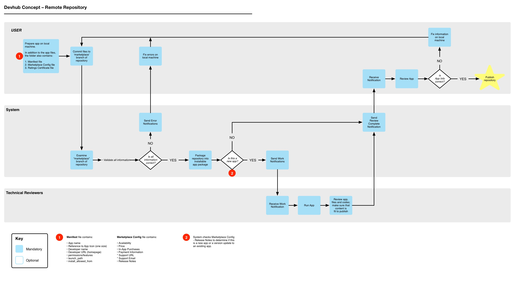

---
layout: MarketplaceUXSpec
multipage: true
---	

<div class="container">
	<h1>Remote Repository</h1>
	<p><a href="javascript: history.go(-1)">&laquo; back</a></p>

	<div class="row">
		<div class="col-sm-12 col-md-12 col-lg-12">
			<div class="thumbnail">
				
			</div>
		</div>

		<p><a href="img/devhub-remote-repository-v1.6.pdf">View larger</a> as a pdf</p>
		
	</div>